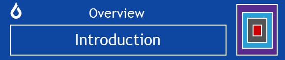

Introduction to Oqtane

Oqtane is an open source and cross-platform modular application framework for building single-page applications on .NET. Oqtane apps are composed of reusable web UI components implemented using C#, HTML, and CSS. Both the client and server code is written in C#, providing a consistent and efficient development experience.
Blazing a New Trail
Oqtane is pioneering the use of Blazor, the revolutionary new development framework from Microsoft that lets you build interactive web UIs using C# instead of JavaScript. Oqtane supports both the Blazor Server and Blazor WebAssembly hosting models.
Open Source
Oqtane is available under the industry standard MIT open source license and is an official member of the .NET Foundation.
Cross Platform
Oqtane is a native .NET Core application and can be used on all major enterprise IT platforms. It currently supports SQL Server, MySQL, SQLite, and PostgreSQL databases.
Modular Architecture
Oqtane has a modular architecture which allows it to serve as an integration fabric for building composite applications. The framework can be easily extended with custom modules and themes. Modules are created as standard .NET Core applications using Blazor components for the UI and can be developed, packaged and installed independently from the Oqtane framework. The framework utilizes open web UI standards (ie. HTML and CSS3) as well as Bootstrap 5 as the default CSS framework for creating modern user experiences.
Multi-Tenant
Oqtane can serve the needs of multiple clients from a single installation. It supports both shared and isolated tenancy models to enable you to comply with data privacy regulations.
Composite UI
The framework provides the capability for an admnistrator to dynamically construct a page from existing components without writing any code.
Headless API
The framework provides a rich set of secure REST-based core APIs which can be leveraged in custom modules. Swagger integration is included by default to simplify API integration.